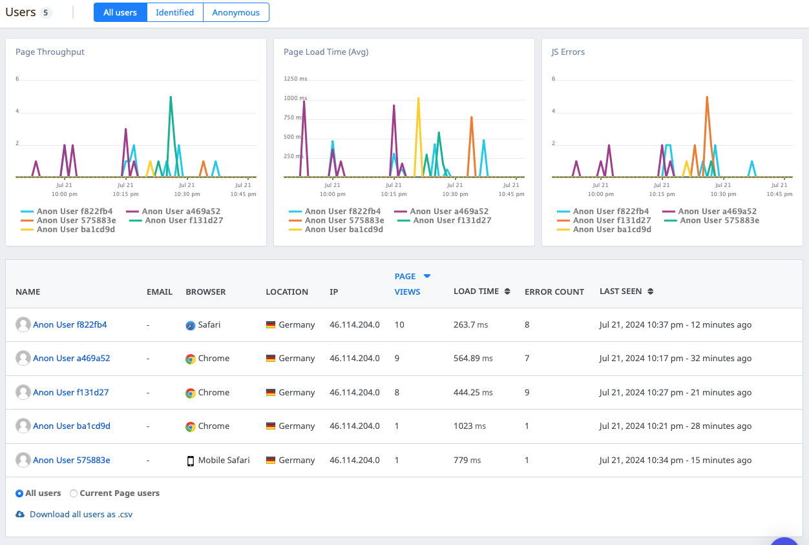
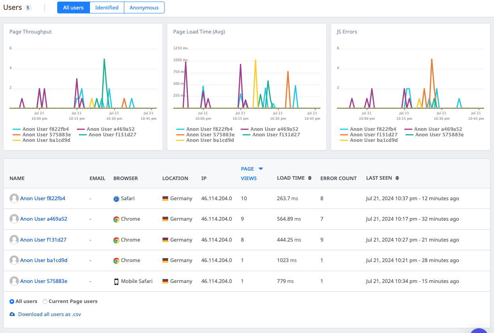

Project Highlights for Chat App: React Native
Project Overview
The Chat App is a mobile application developed using React Native and Expo, aimed at facilitating seamless communication between users. The app allows users to send text messages, share images, and share their current location. Built on the Google Firestore Database, the app ensures smooth online and offline communication. Users can also customize their chat experience by entering their name and selecting a background color for the chat screen.
Technology Stack
This project was built using React Native, Expo, and Google Firestore. It utilizes the Gifted Chat library for creating rich chat interfaces and handles media sharing and location services, ensuring a dynamic and interactive user experience. Firebase was integrated for authentication, and data persistence was managed both online and offline.
Core Features
- Text Messaging: Users can send and receive text messages in real-time, with a smooth and responsive interface.
- Image Sharing: The app allows users to share images either by selecting them from their gallery or capturing new ones with the camera.
- Location Sharing: Users can share their current location with others in the chat, enhancing communication.
- Customization: Users can personalize their chat experience by entering their name and choosing a background color for the chat screen.
- Online and Offline Functionality: The app ensures data persistence and smooth communication, even when offline, by leveraging Firestore's offline capabilities.
Development & Documentation
During the development of the Chat App, I deepened my understanding of React Native, Expo, and Firebase integration. The project required implementing real-time data storage and synchronization, handling media files in mobile apps, and ensuring a seamless user experience with state management and offline support. Documentation was meticulously maintained to guide future development and collaboration.
Project Management
The project was managed using agile methodologies, ensuring iterative development and regular updates. Continuous testing and performance monitoring were integral to the development process, ensuring a high-quality user experience.


 

- Github Repository: https://github.com/TirkarParth/Chat-App
Project Technology
- React Native: The core framework used for building the mobile application. React Native enables the development of cross-platform mobile apps using JavaScript and React.
- Expo: A framework and platform for universal React applications. Expo provides a set of tools and services to develop, build, and deploy React Native apps more efficiently.
- Google Firestore: A real-time NoSQL cloud database that allows for scalable and flexible data storage and synchronization across devices.
- Firebase Authentication: Used for managing user authentication and providing a secure sign-in experience.
- Gifted Chat Library: A third-party library for React Native that simplifies the creation of rich chat interfaces with features like message bubbles and input fields.
- Image Picker: Enables users to select images from their device’s gallery or take new photos with the camera.
- Location Services: Allows users to share their current location with other users in the chat, leveraging the device’s GPS capabilities.
- Offline Support: Ensures that the app remains functional and can store data locally even when there is no internet connection.